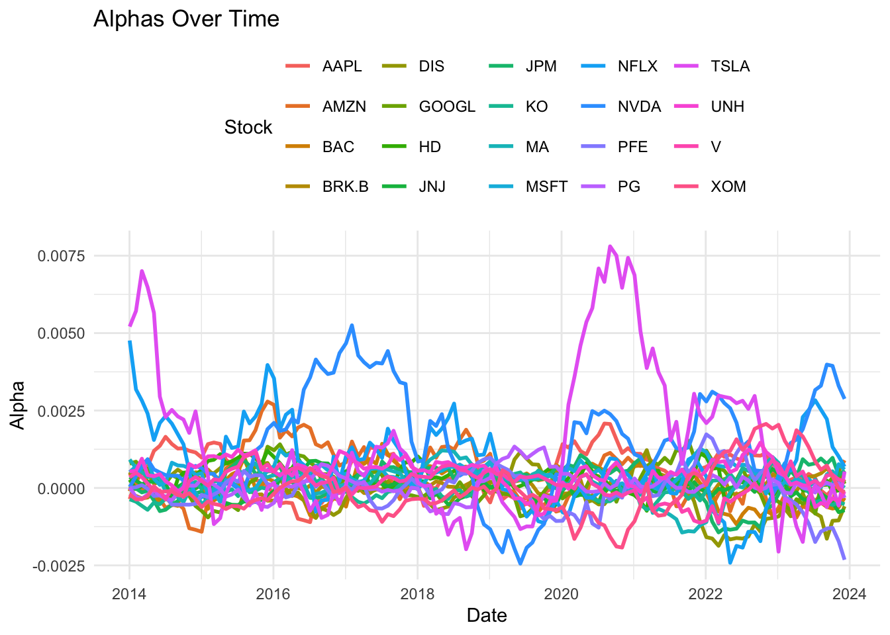

excess_returns_df <-as.data.frame(excess_returns)# Convert Date column to proper Date type if neededexcess_returns_df$Date <-as.Date(excess_returns_df$Date)# Set the Date column as row namesrownames(excess_returns_df) <-as.character(excess_returns_df$Date)# Remove the Date columnexcess_returns_df$Date <-NULLrownames(ff3) <- ff3$Dateff3$Date <-NULL
Code
rolling_ff3_coefficients <-function(returns, ff3_factors, window_size =252, check_interval =21) {# Check that returns and ff3_factors have the same number of rowsif (nrow(returns) !=nrow(ff3_factors)) {stop("returns and ff3_factors must have the same number of rows.") } n <-nrow(returns) stock_names <-colnames(returns) factor_names <-colnames(ff3_factors)# Initialize lists to store rolling results rolling_alpha <-list() rolling_betas <-vector("list", 3) # For 3 factorsnames(rolling_betas) <-paste0("beta_", 1:3)# Prepare empty slots for each stockfor (stock in stock_names) { rolling_alpha[[stock]] <-numeric(0)for (beta_key innames(rolling_betas)) { rolling_betas[[beta_key]][[stock]] <-numeric(0) } } rolling_dates <-character(0)# Iterate over rolling windowsfor (i inseq(window_size, n, by = check_interval)) { start_idx <- i - window_size +1 end_idx <- i returns_window <- returns[start_idx:end_idx, , drop =FALSE] factors_window <- ff3_factors[start_idx:end_idx, , drop =FALSE]# Construct the model formula: y ~ MKT_RF + SMB + HML model_formula <-as.formula(paste("y ~", paste(factor_names, collapse =" + ")))for (stock in stock_names) { y <- returns_window[[stock]] data_for_reg <-cbind(y = y, factors_window)# Fit the linear model model <-lm(model_formula, data = data_for_reg) coefs <-coef(model)# Store alpha and betas rolling_alpha[[stock]] <-c(rolling_alpha[[stock]], coefs[1]) # alpha (intercept)for (j in1:3) { rolling_betas[[paste0("beta_", j)]][[stock]] <-c(rolling_betas[[paste0("beta_", j)]][[stock]], coefs[j+1]) } }# Record the date of the last observation in the window rolling_dates <-c(rolling_dates, rownames(returns)[end_idx]) }# Convert lists to data frames df_alpha <-as.data.frame(rolling_alpha, row.names = rolling_dates) df_betas <-lapply(rolling_betas, function(x) as.data.frame(x, row.names = rolling_dates))# Return a list with alpha and each beta DataFramereturn(list(alpha = df_alpha,beta_1 = df_betas[["beta_1"]],beta_2 = df_betas[["beta_2"]],beta_3 = df_betas[["beta_3"]] ))}# Example usage:# result <- rolling_ff3_coefficients(returns, ff3_factors)# df_alpha <- result$alpha# df_beta_1 <- result$beta_1# df_beta_2 <- result$beta_2# df_beta_3 <- result$beta_3
\(\text{SMB}\): Small-minus-Big factor, representing the size effect.
\(\text{HML}\): High-minus-Low factor, representing the value effect.
\(\alpha\): Intercept (alpha).
$ _1, _2, _3$: Factor loadings.
\(\epsilon\): Residual error term.
Instead of focusing solely on returns, our analysis emphasizes the \(\alpha\) and the factor loadings \(\beta_1, \beta_2, \beta_3\).
Code
library(ggplot2)
Warning: package 'ggplot2' was built under R version 4.2.3
Code
alphas_df <- factor_loadings$alpha %>%rownames_to_column(var ="Date")# Reshape data into long format for ggplotalphas_long <- alphas_df %>%pivot_longer(cols =-Date, names_to ="Stock", values_to ="Alpha")ggplot(alphas_long, aes(x =as.Date(Date), y = Alpha, color = Stock)) +geom_line(size =1) +# Use lines for trendslabs(title ="Alphas Over Time",x ="Date",y ="Alpha",color ="Stock" ) +theme_minimal() +# Apply a clean themetheme(legend.position ="top")
Warning: Using `size` aesthetic for lines was deprecated in ggplot2 3.4.0.
ℹ Please use `linewidth` instead.

3.1 Observations on Alpha Distributions
Code
library(ggridges)
Warning: package 'ggridges' was built under R version 4.2.3
Code
alphas_long <- alphas_long %>%group_by(Stock) %>%mutate(MeanAlpha =mean(Alpha)) %>%ungroup()ggplot(alphas_long, aes(x = Alpha, y =reorder(Stock, MeanAlpha), fill = MeanAlpha)) +geom_density_ridges(scale =1.5, rel_min_height =0.01) +scale_fill_gradient(name ="Mean Alpha", low ="blue", high ="red") +labs(title ="Ridgeline Plot of Alpha Distributions by Stock",x ="Alpha",y ="Stock" ) +theme_minimal() +theme(legend.position ="top")
Picking joint bandwidth of 0.000231
3.1.1 Low-Performing Stocks:
The alpha distributions for low-performing stocks exhibit compact and peaked shapes, with the mean centered around zero.
This indicates that these stocks consistently achieve alpha values near zero, aligning closely with the efficient market hypothesis. In an efficient market, these stocks do not present persistent opportunities for abnormal returns.
3.1.2 High-Performing Stocks:
The alpha distributions for high-performing stocks display very fat tails and lack a distinct peak, resulting in a flat and widespread shape.
These stocks exhibit significantly higher mean alphas, indicating periods of consistent outperformance of the efficient market.
However, their alpha is highly unstable, often reverting as market participants exploit the opportunities.
Despite this reversion, these stocks tend to outperform again, suggesting that their alpha does not stabilize around a single value for long.